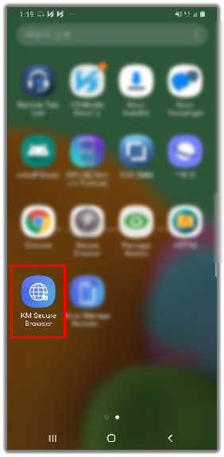

Android Enterprise policies
Last updated January 15th, 2025
This section describes the policies you can configure for Android Enterprise devices.
Knox Manage supports the following four types of Android Enterprise devices:
| Type | Description |
|---|---|
| Fully managed | Controls the whole device. |
| Work profile | Controls only designated work areas. |
| Fully Managed with work profile | Controls both the personal and work areas and applies different policies to each of them. Android 10 and lower. |
| Work profile on company-owned device | Controls both the personal and work areas, and applies different policies to each of them. Android 11 and higher. |
The availability of the policies vary depending on the enrollment type and the OS version. You can turn on Highlight Work Profile on Company-owned Devices Profile Only to show the available policies highlighted in blue.
- Some policies support only Samsung Galaxy devices.
- Until Knox Manage 20.11, Knox Manage only supported Android Enterprise policies for device management. Starting with Knox Manage 21.1, for devices running a Work Profile on a company-owned device, Knox Manage now supports Knox policies.
Consider the following when configuring policies:
- By configuring the device settings for a profile, you can automatically update devices without the need for any user action.
- After Knox Manage is activated and policies are applied, the device settings are automatically updated. After an update, the device user can view the status in the notification messages.
System
Provides backup and restore settings and other features. Updates the operating system on a device.
| Policy | Description | Supported system | ||||||||||||||||||||||||||||||||||||||||||
|---|---|---|---|---|---|---|---|---|---|---|---|---|---|---|---|---|---|---|---|---|---|---|---|---|---|---|---|---|---|---|---|---|---|---|---|---|---|---|---|---|---|---|---|---|
| Set User Certificates | Allows the setting of user certificates. | Android 6 and higher | ||||||||||||||||||||||||||||||||||||||||||
| Use camera |
Allows using the camera. If the device is activated as a Work Profile, the camera function only in the Work Profile is controlled. |
Fully Managed — Android 6 and higher, Samsung Knox 1.0 and higher Work Profile — Android 6 and higher |
||||||||||||||||||||||||||||||||||||||||||
| Screen Capture Permission |
Allows screen captures. On Android 12, system apps built with certain API permissions can capture the screen even if the device has screen capturing disabled by an EMM. This mostly affects preloaded system apps developed by device manufacturers. If you are unsure whether the preloaded apps on a deployed device have these permissions, you should verify with the device manufacturer. |
Android 5+ |
||||||||||||||||||||||||||||||||||||||||||
| Install System updates |
Allows setting if and how over-the-air (OTA) updates are applied to devices. Choose one of the following setting option:
|
Fully Managed — Android 6 and higher | ||||||||||||||||||||||||||||||||||||||||||
| > Set Time Range | Specify a time period for windowed system updates. | |||||||||||||||||||||||||||||||||||||||||||
| > Set Dates to Block Updates | Specify a freeze period during which no system updates are installed. You can specify a maximum of 90 days. Consecutive freeze periods must be set 60 says apart. | |||||||||||||||||||||||||||||||||||||||||||
| Developer mode | Allows using a developer mode. |
Fully Managed — Samsung Knox 2.0 and higher Android 5 and higher |
||||||||||||||||||||||||||||||||||||||||||
| > Use Mock Location for Testing | Allows using a mock location, which specifies an arbitrary location for development or test purposes. Use this policy if the location information from the Update Device Information in the Send Device Command seems incorrect. | |||||||||||||||||||||||||||||||||||||||||||
| > Set Limit for Background Processes |
Allows setting the number of background processes. If this policy is disabled, the default number of background processes will be set at the maximum number. |
|||||||||||||||||||||||||||||||||||||||||||
| > Close Apps if User Signs Out of the Device |
Enables closing all running applications when the user signs out of the device. If this policy is disabled, the activation setting is disabled on the device and the user cannot control the device settings. |
|||||||||||||||||||||||||||||||||||||||||||
| Add or Delete Account |
Allows modification—addition or deletion—of the accounts added for each application.
|
Android 6 and higher | ||||||||||||||||||||||||||||||||||||||||||
| > Account Type Allowlist and Blocklist |
Specifies whether to define an allowlist or blocklist of app and service accounts that the device user can manage. When set, the Account List policy becomes either a blocklist or an allowlist. If you change the value of this policy when the account list contains values, all values in the account list will be erased. Only available if the Account Modification policy is set to Allow. Values
|
Android 6 and higher | ||||||||||||||||||||||||||||||||||||||||||
| Account List |
Specify the list of app and service accounts that the device user is allowed or blocked from managing. Accounts are specified as interfaces of Android package names, such as com.google.android.gm.pop3 for the POP3 account of the Gmail app. Managed Google Play accounts can't be modified, so adding them to this list when in allowlist mode has no effect. Only available if the Account Modification policy is set to Allow and the Account Block/Allowlist policy is set. ValuesTo add an account, enter it and click Here are the account names of common apps:
|
Android 6 and higher | ||||||||||||||||||||||||||||||||||||||||||
| > Allow Changes to Managed Google Play | Specifies which managed and unmanaged accounts on the device can make changes through Google Play. You can select Allow All for all accounts, Allow only MGP Account for just the Managed Google Play (MGP) account, or Allow MGP and Selected Accounts for the MGP account and an allowlist defined by the Account Allowlist policy. | Fully Managed — Android 6 and higher | ||||||||||||||||||||||||||||||||||||||||||
| > Account Allowlist | Specifies an allowlist of accounts on the device that can access Google Play. | Fully Managed — Android 6 and higher | ||||||||||||||||||||||||||||||||||||||||||
| Use VPN | Allows the user to configure the VPN settings on the device. |
Fully Managed — Android 6 and higher Work Profile — Android 7 and higher |
||||||||||||||||||||||||||||||||||||||||||
| User Deletion | Allows deleting the added users. | Fully Managed — Android 6 and higher | ||||||||||||||||||||||||||||||||||||||||||
| Safe mode | Allows using Safe Mode. This policy retains device control functions such as camera control, but not Knox Manage applications and preloaded applications. | Fully Managed — Android 6 and higher, Samsung Knox 1.0 and higher | ||||||||||||||||||||||||||||||||||||||||||
| Change Wallpaper |
Allows both the device user and apps to change the wallpaper. Values
|
Android 7 and higher | ||||||||||||||||||||||||||||||||||||||||||
| Set Custom Wallpaper |
Applies a custom wallpaper on the device. Values
If this value is unset, no custom wallpaper is applied. |
Android 7 and higher | ||||||||||||||||||||||||||||||||||||||||||
| > Wallpaper File for Home Screen |
Specifies the custom wallpaper to apply to home and lock screens. Only available if the Set Custom Wallpaper policy is set to Set for home and lock screen. ValuesTo add custom images, click The image file can be in BMP, GIF, ICO, JPG, JPEG, or PNG format and can't exceed 10 MB in size. |
Android 7 and higher | ||||||||||||||||||||||||||||||||||||||||||
| >> Screen Orientation |
Specify the orientation of the wallpaper. Values
|
|||||||||||||||||||||||||||||||||||||||||||
| > Wallpaper File for Lock Screen |
Specifies the custom wallpaper to apply to home and lock screens. Only available if the Set Custom Wallpaper policy is set to Set for home and lock screen. ValuesTo add custom images, click The image file can be in BMP, GIF, ICO, JPG, JPEG, or PNG format and can't exceed 10 MB in size. |
Android 7 and higher | ||||||||||||||||||||||||||||||||||||||||||
| >> Screen Orientation |
Specify the orientation of the wallpaper. Values
|
|||||||||||||||||||||||||||||||||||||||||||
| > Wallpaper File for Home and Lock Screen |
Specifies the custom wallpaper to apply to home and lock screens. Only available if the Set Custom Wallpaper policy is set to Set for home and lock screen. ValuesTo add custom images, click The image file can be in BMP, GIF, ICO, JPG, JPEG, or PNG format and can't exceed 10 MB in size. |
Android 7 and higher | ||||||||||||||||||||||||||||||||||||||||||
| >> Screen Orientation |
Specify the orientation of the wallpaper. Values
|
|||||||||||||||||||||||||||||||||||||||||||
| Factory reset | Allows a device factory reset. | Fully Managed — Android 6 and higher, Samsung Knox 1.0 and higher | ||||||||||||||||||||||||||||||||||||||||||
| Transfer Data Using NFC | Allows using Android Beam which transfers data using NFC. | Fully Managed — Android 6 to 9, Samsung Knox 1.0 and higher | ||||||||||||||||||||||||||||||||||||||||||
| Show Notifications on Device | Specify whether to display notification windows or dialogs, such as toasts, alerts and overlays, on the device. Values
|
Fully Managed — Android 5 and higher | ||||||||||||||||||||||||||||||||||||||||||
| Android Easter Egg Game | Allows executing the Easter Egg games on devices with specific actions. | Fully Managed — Android 6 and higher | ||||||||||||||||||||||||||||||||||||||||||
| Change Brightness Setting | Allows changing of the screen brightness level. | Fully Managed — Android 9 and higher | ||||||||||||||||||||||||||||||||||||||||||
| Always on Display | Allows the always on display feature that displays brief information on the lock screen, such as notifications or time. | Fully Managed — Android 9 and higher | ||||||||||||||||||||||||||||||||||||||||||
| Show Error Notification after App Crash | Allows an error dialog display function when an application shutdowns abnormally. | Fully Managed — Android 9 and higher | ||||||||||||||||||||||||||||||||||||||||||
| Take action if OS is Compromised |
Select a measure to take when a compromised OS is detected.
The factory reset (only) function is unsupported in Android 2 and lower. To reset the device, select the Factory reset + Initialized SD card option. |
Fully Managed — Android 6 and higher | ||||||||||||||||||||||||||||||||||||||||||
| Show Notification if Event is Trigerred |
Set the device to display a notification when a device control event is applied. User defined — Users can set event notifications on the device from the Settings menu of the Knox Manage agent. Show notification — Displays the notification when an event for device control is applied. Hide notifications — Hides the notification when an event for device control is applied. |
Fully Managed — Android 6 and higher, Samsung Knox 1.0 and higher | ||||||||||||||||||||||||||||||||||||||||||
| Show Notification if Event is Disabled |
Set the device to display a notification when an event for device control is disengaged.
|
Fully Managed — Android 6 and higher, Samsung Knox 1.0 and higher | ||||||||||||||||||||||||||||||||||||||||||
| Remove Notifications from Quick Panel |
Set the removal of notifications from the device Quick panel. User Defined — Users can remove notification on the device from the settings menu of Knox Manage agent. Disallow to Remove Notification — Users cannot remove notifications on the device Quick Panel. Allow to Remove Notification — Users can remove notifications on the device Quick Panel. |
Fully Managed — Android 6 and higher, Samsung Knox 1.0 and higher | ||||||||||||||||||||||||||||||||||||||||||
| Set Encryption for Device Storage | Specifies the encryption of the device's internal storage or the external SD card. | Fully Managed — Android 6 and higher, Samsung Knox 1.0 and higher | ||||||||||||||||||||||||||||||||||||||||||
| > Storage encryption |
Check the check box to select the storage to be encrypted. External SD card encryption is applicable to Samsung Galaxy devices only. |
|||||||||||||||||||||||||||||||||||||||||||
| Set Date and Time |
Allows the device user to change the date and time settings. Values
If this policy is set to Enforce Time Zone, the Automatic date and time setting is turned off. The user can turn on Automatic date and time again on their device. For devices running Android 12 (One UI 4.1) and higher, the Automatic time zone and Automatic date and time settings on the device are independent of each other — the device user can set both. Setting Enforce Time Zone on the Knox Manage console doesn't impact these settings on the device. |
Fully Managed — Android 6 and higher | ||||||||||||||||||||||||||||||||||||||||||
| > Time Zone | Specifies the time zone. Only available if the Set Date and Time policy is set to Enforce Time Zone. | Fully Managed — Android 6 and higher, Samsung Knox 1.0 and higher | ||||||||||||||||||||||||||||||||||||||||||
| Change Language | Allows the language setting policy. | Fully Managed — Android 9 | ||||||||||||||||||||||||||||||||||||||||||
| Location Setting |
Allows the device user to change the location settings.
As of 23.03, the Location Setting policy is disabled. It will be deprecated in a future release. Use the GPS policy instead. |
Fully Managed — Android 9 | ||||||||||||||||||||||||||||||||||||||||||
| Backup Data on Cloud |
Allows backup of the device data. If the backup function can be found on your device at Google > Backup, it may seem possible to turn the backup setting on or off, even if this policy is set to Disallow. However, the functionality of backup is prohibited, regardless of mobile UI, when the Backup policy is set to Disallow. |
Fully Managed — Android 8 and higher | ||||||||||||||||||||||||||||||||||||||||||
| Show Message for Blocked Settings |
Enables a custom message to display when the device user taps or tries to use a disabled setting. This policy has two sub-policies, one for a short message to display in most screens of the Settings app, and the other for a longer message to display in the device administrators screen of the Settings app. |
Fully Managed — Android 7 and higher | ||||||||||||||||||||||||||||||||||||||||||
| > Short Message | Specifies the custom message to display when the device user taps or tries to use a disabled setting on the Settings app. Only available if the Show Message for Blocked Settings policy is set to Apply. | Fully Managed — Android 7 and higher | ||||||||||||||||||||||||||||||||||||||||||
| > Long Message | Specifies the custom message to display when the device user taps or tries to use a disabled setting in the device administrators screen of the Settings app. Only available if the Show Message for Blocked Settings policy is set to Apply. | Fully Managed — Android 7 and higher | ||||||||||||||||||||||||||||||||||||||||||
| Show Custom Message on Lock Screen |
Enables a custom message on the device's lock screen. You can add lookup items to the message, which substitute for device and user information like username and phone number in the Android environment. If the message contains only whitespace characters, then no lock message displays, and the user can't change it. If this value is unset, the message only contains the user information, if it's available. |
Fully Managed — Android 7 and higher | ||||||||||||||||||||||||||||||||||||||||||
| > Message | Specifies the custom message on the lock screen. Enter the message in the text field. Click Lookup to browse and select available lookup items to add to the message. | Fully Managed — Android 7 and higher |
 .
. .
.Connectivity
Controls the network settings, such as Bluetooth, Wi-Fi Direct, and tethering.
| Policy | Description | Supported system |
|---|---|---|
| Printing |
Allows sending print commands to connected printers. Values
|
Android 9 and higher |
| Always On VPN |
Sets a VPN app to Always On mode. This policy can be applied for only one VPN app per device. To ensure the policy value doesn’t get modified by the device user, set the System > Use VPN policy to Disallow. Values
For Ivanti Pulse Secure, if both Connectivity > Always On VPN and VPN > VPN Trigger Type policies are applied, the latter takes precedence. For example, if VPN > VPN Trigger Type is set to Manual, Ivanti Pulse Secure can only be run manually by the device user — regardless of the Connectivity > Always On VPN policy. |
Fully Managed — Android 7 and higher Work Profile — Android 7 and higher |
| > Set Application |
Lets you select the VPN application. |
Fully Managed — Android 7 and higher Work Profile — Android 7 and higher |
| Autofill Service | Allows auto-completion of information that you enter on websites in the Android browser. | Android 8 and higher |
| Bluetooth Share | Allows Bluetooth sharing. | Fully Managed — Android 8 and higher |
| 5G Network Slicing |
Allows 5G network slicing, which lets you allocate a single 5G connection as multiple distinct virtual connections. You can enable 5G slicing for the entire device or just the work profile, or for specific apps. Values
This policy has been verified for standalone mode (SA) for 5G slicing. The carrier must support 5G slicing by enterprises. |
Fully Managed — Android 13 and higher Work Profile — Android 12 and higher |
| Network Reset |
Allows the network usage rest function on a set date. For Android 7 and lower devices, this applies to Samsung devices (Knox1.0+) only. |
Fully Managed — Android 6 and higher |
| Mobile Network Setting | Allows configuring the mobile network settings. | Fully Managed — Android 6 and higher |
| Wi-Fi Setting | Allows changing the Wi-Fi Settings. | Fully Managed — Android 6 and higher |
| Use Wi-Fi |
Allow using Wi-Fi. If the Wi-Fi policy was not applied successfully, the device tries to apply it again 30 minutes after Knox Manage is activated.
|
Fully Managed — Android 6 and higher, Samsung Knox 1.0 and higher |
| > Wi-Fi Direct |
Allows use of the Wi-Fi Direct (Wi-Fi P2P) connection.
|
Fully Managed — Samsung Knox 1.0 and higher |
| Tethering Setting | Allows tethering Settings. | Fully Managed — Android 6 and higher |
| Use Bluetooth |
Allows the device user to control Bluetooth.
|
Fully Managed — Android 6 and higher, Samsung Knox 1.0 and higher |
| > Desktop connection | Allows PC connection with the user's device using Bluetooth. | Fully Managed — Android 6 and higher, Samsung Knox 1.0 and higher |
| > Data transfer |
Allows data exchanges with other devices using Bluetooth connection. With Knox Manage 23.12, this policy is deprecated and available in the read-only mode. It is replaced by the Bluetooth Share policy. The policy values are mapped to the Bluetooth Share policy as follows:
A prompt displays to confirm the changes. On clicking OK, the Data Transfer setting is changed to N/A and the Bluetooth Share policy is set as defined above. |
Fully Managed — Samsung Knox 1.0 and higher |
| > Search mode | Allows device search mode. | Fully Managed — Samsung Knox 1.0 and higher |
| Control Bluetooth Settings | Specifies the controls for the Bluetooth use. | Fully Managed — Android 8 and higher |
| Transfer files through USB | Allows the device user to transfer files over USB. | Fully Managed — Android 6 and higher, Samsung Knox 1.0 and higher |
| Use External SD card | Allows using the external SD card. | Fully Managed — Android 6 and higher, Samsung Knox 1.0 and higher |
| > Write to external SD card |
Allows writing to an external SD card. If the external SD card policy is allowed but the Write to external SD card policy is not, then external SD cards can only be read and do not have reset control. |
Fully Managed — Samsung Knox 1.0 and higher |
| USB Debugging | Allows the device user to enable USB debugging. | Work Profile — Android 6 and higher |
Security
Configures the security settings, such as Play Integrity (SafetyNet Attestation), Multifactor authentication, and screen timeout.
| Policy | Description | Supported system |
|---|---|---|
| Play Integrity (SafetyNet Attestation) | Allows checks to validate the integrity of the device. The Play Integrity API replaces the SafetyNet Attestation API, which is being deprecated in June 2024. The Play Integrity API improves the detection of device-side accounts as well as Google Play app and user accounts. We recommend that you upgrade to the latest Knox Manage agent and migrate to the Play Integrity API. For more information, see Migrating from the SafetyNet Attestation API in the Android Developer documentation. |
Android 6 and higher |
| > Verification Interval (days) | Set an interval at which to assess the devices. | |
| > Verification Failure Policy (During Enrollment) |
Select a measure.
|
|
| > Verification Failure Policy (After Enrollment) |
Select a measure.
|
|
| Enforce Multi-factor Authentication |
Enable multifactor authentication (2FA) that unlocks a device only after two authentication methods are provided, including one biometric input—face, iris, or fingerprint—and one lock screen method, such as PIN, password, or pattern. Incorrect use of this policy together with One Lock and Biometric policy can lock your device. |
Fully Managed — Samsung Knox 3.0 and higher |
Lock Screen
Configures device lock screen settings.
| Policy | Description | Supported system |
|---|---|---|
| Screen Lock Policies |
Set the device's lock screen type and minimum quality. Use of the camera is prohibited when the device is locked. You can set up to two lock screen policy sets:
If a user forgets their password and contacts you, you should send the device command to reset the password and guide them to enter the temporary password. For more information about this procedure, see View details of a device. |
|
| > Set Minimum Complexity |
Set the minimum lock screen complexity. There are four complexity levels, each pre-defined by the Android API. The device user must use a lock screen that meets or exceeds the minimum level. Set the minimum complexity level of the lock screen:
|
Fully Managed — Android 12.0+ Work Profile — Android 12.0+ Personal area — Android 12.0+ |
| > Set Minimum Strength |
Set a minimum strength level for the lock screen:
The password strength increases in the following ascending order — Weak Biometric < Pattern < Numeric < Numeric Complex < Alphabetic < Alphanumeric < Complex. |
Fully Managed — Android 6 to 11 Work Profile — Android 6 to 11 Personal area — Android 7 to 11 |
| >> Minimum Length |
Set the minimum length of the password. The value can be between 4–16 characters for Numeric or Alphanumeric strength levels. The value can be between 6–16 characters for the Complex strength level. |
|
| >> Minimum Letters |
Set the minimum number of letter characters in the password. The value can be between 1–10 characters. |
|
| >> Minimum Non-letters |
Set the minimum number of numeric and special characters required in the password. The value can be between 1–10 characters. |
|
| >> Minimum Lowercase Letters |
Set the minimum number of lowercase letter characters required in the password. The value can be between 1–10 characters. |
|
| >> Minimum Capital Letters |
Set the minimum number of uppercase letter characters required in the password. The value can be between 1–10 characters. |
|
| >> Minimum Numeric Characters |
Set the minimum number of numeric characters allowed in the password. The value can be between 1–10 characters. |
|
| >> Minimum Special Characters |
Set the minimum number of special characters required in the password. The value can be between 1–10 characters. |
|
| > > Maximum Sequential Numbers |
Set the longest string of sequential numbers (1234, 4321, 2468) allowed in the password. The value can be between 1–10 characters. |
Devices secured by Samsung Knox |
| > > Maximum Sequential Characters |
Set the longest string of sequential characters (abcd, dcba, aceg) allowed in the password. The value can be between 1–10 characters. |
Devices secured by Samsung Knox |
| > Screen Lock Requirements | These settings define rules about how the lock screen changes over time, such as user changes to the lock screen, expiration, and minimum login parameters. |
Fully Managed — Android 6+ Work Profile — Android 6+ Personal area — Android 7+ |
| >> Set Days Before User Must Reset Password | Set the number of days before the password must be reset. The value can be between 1–365 days. |
|
| >>> Notify Users about Expiring Passwords (Fully Managed) | Set the number of days before password expiry when the notification must be sent out for fully managed devices. The value can be 1, 3, 5, or 7 days. |
|
| >>> Send Notification Before Expiration (Work Profile) | Set the number of days before password expiry when the notification must be sent out for work profile devices. The value can be 1, 3, 5, or 7 days. |
|
| >> Limit Wrong Unlock Attempts |
Set the maximum number of incorrect password attempts before access is restricted. You can set this only with Numeric, Alphanumeric, or Complex password strength. The value can be between 0–10 times. |
|
| >>> Take Action if Attempts Are Exceeded (Fully Managed, Fully Managed with Work Profile) |
Choose an action to perform on a Fully Managed device when the maximum number of failed unlock attempts is reached:
|
Fully Managed — Android 6 and higher |
| >>> Take Action if Attempts Are Exceeded (Work Profile) |
Select an action to perform when the maximum number of failed unlock attempts is reached:
|
Work Profile — Android 6 and higher Company-owned — Android 7 and higher |
| >> Lock Devices after a Set Number of Hours | Set the number of hours after which the screen must be locked, if a weak authentication method was used on the device. | |
| >> Screen Lock History |
Set the minimum number of new passwords that must be used before a user can reuse a previous password. For example, if the password is Knox123! and the Password History (times) is 10, the user must use ten other passwords before they can reuse Knox123!. The value can be between 1–10 times. |
|
| >> Screen Lock Compliance Violation |
Choose an action to perform when a password does not comply with requirements:
|
|
| > Block Certain Actions if Screen is Locked |
Choose which features and functionality to block when the screen is locked. Fully Managed devices:
Devices with a Work Profile:
|
Fully Managed — Android 5+ Work Profile — Android 7+ Personal area — Android 7+ |
| Set Maximum Screen Timeout Allowed |
Set the maximum time limit that a user can linger before screen timeout. Timeout settings apply based on the Use one lock setting on the work profile of a device:
To set Use one lock on a device, go to Settings > Work profile settings. |
Fully Managed — Android 6 and higher, Samsung Knox 2.0 and higher Work Profile — Android 12 and higher Personal area — Android 12 and higher |
| Screen Lock Time Changes by Device User | Specify whether to allow the user to control the screen lock time setting. | Fully Managed — Android 9.0 and higher |
Kiosk
Configure kiosk applications on a Kiosk device.
| Policy | Description | Supported system |
|---|---|---|
| Kiosk App Settings |
Select a Kiosk feature to use on a device.
|
Fully Managed — Samsung Knox 1.0 and higher Non-Samsung Fully Managed — Android 9 and higher |
| > Kiosk Package Name |
Click Add to select Kiosk applications from the Select Application dialog or click New to create a Kiosk App. If Kiosk app settings is set to Web Mode, the package name of the app registered as kiosk browser is automatically selected and displayed in the Kiosk Package Name setting. |
|
| > Default URL |
Set the home page of the Kiosk Browser. ValuesEnter a URL. Click Lookup to browse and select available lookup items to include in the URL. |
|
| > Hide Info icon |
Specify whether to hide the info icon on the Kiosk screen. Values
Hiding the icon restricts the kiosk users from viewing the open source license notice and using the exit kiosk code on the device. In this case, to exit from the kiosk mode, you must send a device command. |
|
| > Exit Kiosk Mode Attempt Limit |
Specify the maximum number of times the device user can unsuccessfully enter exit code on the kiosk. |
|
| >> Take Action if Attempts are Exceeded |
Specify when the device user can again try exiting from the kiosk after they've crossed the maximum number of specified attempts. Values
|
|
| > Automatic App Updates | Set the Kiosk Browser to be updated automatically. | |
| > File Uploads |
Allows the user to upload files to websites through the Kiosk Browser. Disallow is the default value. |
|
| > Copy Text | Allow the copying of text strings in the Kiosk Browser. | |
| > Screen Saver |
Use the screen saver for Single App and Multiple App kiosks and the Kiosk Browser. When no user activity is sensed for a certain amount of time set in the Auto Screen Off or Session Timeout settings on the device, the registered images or video files are activated on the device display. The Screen Saver for the Kiosk Browser only runs while the device is charging. |
|
| >> Screen Saver Type | Select either an image or video type screensaver. | |
| >>> Image |
Select image files for the screen saver. You can add up to 10 image files in the PNG, JPG, JPEG, or GIF format (animated files are not supported). Each image file must be less than 5 MB.
The device control command must be transferred to the device to apply an image file to it. |
|
| >>> Video |
Select a video file for the screen saver. You can add only one video file in the MP4 or MKV format. The video file must be less than 50 MB.
The device control command must be transferred to the device to apply a video to it. |
|
| > Session timeout |
Allows the use of the session timeout feature for the Kiosk Browser. If the user does not use the device for a set time, the device deletes user information, such as the cache and cookies, in the device Kiosk Browser and goes to the main page URL:
|
|
| >> Time (sec) |
Set the session timeout in seconds for the Kiosk Browser. The value can be between 10 - 3600 secs (default is 1800). |
|
| > Utilities Settings | Allows the use of specific features on Kiosk mode devices. | Fully Managed — Android 9 |
| >> System status bar |
Allows the use of the system status bar, which displays the time, network connectivity, and battery status. For Android P and higher devices, you must allow the notification bar as well to enable the system status bar. |
|
| >> Notification bar |
Allows access to the notification bar. If this policy is set to Allow, the Home policy is allowed automatically. If you set this policy to Disallow, then the kiosk doesn't display any messages on the notification bar or play any notification sounds. |
|
| >> Power Off | Allows the use of the Power button to turn off or restart the device. | |
| >> Home Button | Allows the use of the Home button on the device. | |
| >> Recent apps | Allows the use of the Recent task button. The Home button also needs to be allowed to use the Recent task button. | |
| >> KeyGuard | Allows the screen lock policy to be applied to the device. If it is set to Disallow, users can access the Kiosk device without a screen lock password, regardless of the screen lock policy of the device. | |
| > Speed Lock |
Locks the device for the user’s safety while travelling above a specified speed limit. Values
This feature is affected by the device’s GPS status, and may not work correctly while passing through a tunnel. |
Fully Managed — Android 9 and higher |
| >> Unit |
The unit of measurement used to calculate and display the device’s travelling speed. Values
|
Fully Managed — Android 9 and higher |
| >> Speed |
The speed limit, exceeding which will trigger the lock. Default value is 30. |
Fully Managed — Android 9 and higher |
| >> Activation Threshold (milliseconds) |
How soon the lock will be activated upon exceeding the speed limit (Speed), measured in milliseconds. Default value is 5000. |
Fully Managed — Android 9 and higher |
| >> Deactivation Threshold (milliseconds) |
Determines how soon the lock will be deactivated once the travelling speed returns to below the specified speed limit (Speed). Measured in milliseconds. Default value is 5000. |
Fully Managed — Android 9 and higher |
| >> Header Text |
Header text for the lock screen notification. Defaults to “Speed Lock”. |
Fully Managed — Android 9 and higher |
| >> Main Text |
Message content for the lock screen notification. Defaults to “Slow Down to Access Device”. |
Fully Managed — Android 9 and higher |
| >> Transparency |
Determines the transparency of the lock screen notification on a scale of 0 (least transparency) to 100 (maximum transparency). Default value is 100. |
Fully Managed — Android 9 and higher |
| > Run JavaScript | Allow the running of the JavaScript contained in websites. | |
| > Use HTTP Proxy | Allow the use of an HTTP proxy for communications in the Kiosk Browser. | |
| >> IP/Domain:Port | Set the HTTP proxy server IP or domain address, and Port. When not entered, the Port number is automatically set to 80. | |
| Delete Kiosk app when policy is removed | Allows to delete applications along with policies from a device when the applied policy is deleted. |
Fully Managed — Samsung Knox 1.0 Non-Samsung Fully Managed — Android 9 |
| Screen on when Plugged in |
Enable this feature to set the device screen on when charging using any of the following options: |
|
| > Screen on when Plugged into Charger |
Select the option to apply the policy:
Multiple selection is possible. |
|
App Restrictions
Configures options for application controls such as installation, verification, and permission.
| Policy | Description | Supported system |
|---|---|---|
| App Installation from Other Sources | Allows the installation of apps from untrusted sources instead of just the Google Play Store. |
Fully Managed — Android 6 and higher Work Profile — Android 6 and higher |
| Skip App Tutorial | Allows the users to skip application tutorials. | Android 6 and higher |
| Control Apps from Settings |
Allows application control from the settings application. The following actions can be configured:
|
Fully Managed — Android 6 and higher |
| App Installation | Allows application installation. |
Fully Managed — Android 6 and higher Work Profile — Android 6 and higher |
| App Uninstallation | Allows application uninstallation. |
Fully Managed — Android 6 and higher Work Profile — Android 6 and higher |
| Verify Apps Using Google Play Protect | Allows application verification using Google for all device applications. |
Fully Managed — Android 6 and higher Work Profile — Android 5 - 7.1 |
| Runtime Permissions for All Apps |
Controls how apps can request permissions during runtime.
This policy is relevant to all apps, and is only applied when an app requests permission during runtime (regardless of when you set device permissions). |
Android 6 and higher |
| > App permission exception policy list |
Lets you add policy exceptions for specific apps. Supported for internal apps and Managed Google Play public apps. To add an app, click Add, then select the app in the Select Application window. To delete an app, click the trash can icon next to it.
|
Android 6 and higher |
| Block Certain Apps from Running | Blocks specific apps from running on the device. Values
|
Android 6 and higher |
| > App List |
Lets you select apps that will be blocked from running.
Apps that has been added to the App download allowlist policy cannot be added. |
|
| Hide Apps | Set the apps that must be hidden on the devices. | Android 8 and higher |
| > Hide Apps | Add the apps to be hidden on the devices.
|
|
| Block Certain Apps from beng Uninstalled | Set to prevent the uninstallation of the device application. | |
| > Application uninstallation prevention list |
Add applications to prevent their uninstallation.
|
Android 6 and higher |
| Activate Certain Pre-installed System Apps |
Set to activate hidden system applications for Android Enterprise devices to view. If a device is activated with Android Enterprise, only designated applications appear on the device. Apps can't be activated if they are members of the app installation blocklist. |
|
| > System App Activation |
Add system applications to be activated.
|
Android 6 and higher |
| Delegated Scopes for Apps |
Enables delegated scopes for apps, which is a device policy controller function that grants elevated API and policy control to an app. An app with delegated scopes can dictate policies and configuration settings to other apps. Values
If this value is unset, then delegation scopes are disabled. |
Android 8 and higher |
| > App Delegation Scope |
Configures delegated scopes for apps. Each configuration targets an app with a profile in the Knox Manage tenant and assigns scopes to it. You can only manage one delegation configuration per app. Only available if the Delegated Scopes for Apps policy is set to Apply > Allow. ValuesTo assign delegated scopes to an app:
For a complete list of compatible scopes, see Supported delegation scopes. To remove the delegated scopes for an app:
|
|
| App Prevented from Using Mobile Data Setting | Enables blocking apps from using mobile data on the device. When this policy is enabled, the app can only transfer data over the main Wi-Fi connection. Data from tethered and hotspot Wi-Fi connections isn't available. | Android 10 and higher |
| > Block Certain Apps from Using Mobile Data |
Specifies a blocklist of apps that can't use mobile data. Only available if the App Prevented from Using Mobile Data Setting policy is set to Apply. ValuesTo add apps, click Add, then search for and select one or more apps. To remove an app, click |
Android 10 and higher |
| Apps Allowing External SD Card |
Allows the use of an external SD card. The external SD card cannot be used by default. Supported devices: (SDK or API):
|
|
| > Allowlisted apps for external SD card |
Add applications that can use an external SD card.
|
|
| App Download Block/Allowlist |
Configure allowlist and blocklist policies to restrict the use of personal Google Play accounts and installation of personal apps on devices. Supported devices (SDK or API):
These policies apply to apps downloaded from managed Google Play only. Apps that are already installed or are directly installed using APKs are not impacted. For already installed apps, use the previously set up app blocklist and allowlist policy. This policy is only supported on fully managed devices. |
|
| > App Download Blocklist | Add apps to the blocklist, restricting users from downloading or installing these apps to the target devices. To add apps to the blocklist:
|
|
| > App Download Allowlist | Add apps to the allowlist which lets users download and install these apps to the target devices. To add apps to the allowlist:
|
|
| Work and Personal Apps Connection | Specify whether the app can communicate with itself across two different profiles, subject to user consent. | Work profile — Android 11.0 and higher |
Supported delegation scopes
The supported delegation scopes are:
| Scope | Supported system |
|---|---|
| Management of uninstalled packages |
Fully Managed — Android 9 and higher Fully Managed with Work Profile — Android 9 and higher |
| Installing existing packages |
Fully Managed — Android 9 and higher Fully Managed with Work Profile — Android 9 and higher |
| Selection of key chain certificates | Android 10 and higher |
| Network logging |
Fully Managed — Android 10 and higher Work Profile — Android 12 and higher |
| Security logging |
Fully Managed — Android 12 and higher Work Profile on company-owned — Android 12 and higher |
| Certificate installation and management | Android 9 and higher |
| Managed configurations management | Android 9 and higher |
| Blocking uninstallation | Android 9 and higher |
| Permission policy and permission grant state | Android 9 and higher |
| Package access state | Android 9 and higher |
| Enabling system apps | Android 9 and higher |
Location
Allows the use of GPS or location data collection from a device.
| Policy | Description | Supported system |
|---|---|---|
| Location Settings |
Specify whether the device user can configure location settings. Values
When Location Settings is set to Force On, the device location setting is enabled and locked, preventing device users from changing it and allowing IT administrators to track the device. However, Google's Location Accuracy service also gets disabled, which prevents Knox Manage from collecting precise device location data. To address this issue, enable Allow user to configure and prompt for location accuracy so that device users can turn on Location Accuracy. The Location Settings policy replaces the GPS and Location Accuracy policies in previous versions of Knox Manage.
|
Fully Managed — Android 6 and higher, Samsung Knox 1.0 and higher Work Profile — Android 6 and higher |
| Allow Collection of Location Data |
Controls the collection of location data from the device. Values
|
Fully Managed — Android 6 and higher, Samsung Knox 1.0 and higher |
| > Set Collection Time |
Set an interval period to save the location data of the device. Available interval periods are 30 minutes, 1 hour, 2 hours, 4 hours, 12 hours, and 24 hours. To set the collection interval, select either Automatic or User consent for the Allow Collection of Location Data policy. |
Phone
Configures the phone settings, such as airplane mode, the microphone settings, and the cellular network settings.
| Policy | Description | Supported system |
|---|---|---|
| Airplane mode | Allows the use of airplane mode. | Fully Managed — Android 9 and higher, Samsung Knox 2.0 and higher |
| Cell Broadcast Setting |
Allows the use of emergency broadcast settings. The carrier can send a same message, such as an emergency alert, to the devices connected to the same cellular base station. |
Fully Managed — Android 6 and higher |
| Volume Adjustment | Allows adjusting the volume. | Fully Managed — Android 6 and higher |
| Microphone | Allows the use of the microphone. |
Fully Managed — Android 6 and higher, Samsung Knox 1.0 and higher Work Profile — Samsung Knox 1.0 and higher |
| > Recording | Allows recording with the microphone. | Samsung Knox 1.0 and higher |
| > S Voice | Allows the use of S Voice. | Fully Managed — Samsung Knox 1.0 and higher |
| Voice Call (except Samsung Device) |
Allows the use of voice calls. To control Samsung devices, use the Prohibit voice Call policy. |
Fully Managed — Android 6 and higher |
| SMS (except Samsung Device) | Allows the use of text messages. | Fully Managed — Android 6 and higher |
| Data connection during roaming | Allows a data connection while using roaming service. | Fully Managed — Android 7 and higher, Samsung Knox 1.0 and higher |
Container
Allows data transfers within the Work Profile or with other devices.
| Policy | Description | Supported system |
|---|---|---|
| Copy and Paste Clipboard per Profile | Allows copying and pasting with the clipboard between the personal and work areas. | Work Profile — Android 7.1 and higher |
| Phone Book Access Profile (PBAP) via Bluetooth |
Allows sharing contacts from the Profile Owner to the connected device using Bluetooth. Before you use this policy, set the Bluetooth share policy to Allow. |
Work Profile — Android 8.0 and higher |
| Set a Message for Profile Wipe |
Sets a custom message to warn the user when the data on the Work profile is being wiped. Values
|
Work Profile — Android 9.0 and higher |
| Set a Maximum Period for Profile Turned off |
Specifies a time period during which the device user is allowed to turn off the work profile (WP-C only). The following options are available:
Users of WP-C devices are allowed to turn off the Work profile on their devices. If the device user does not restart the Work profile, all Personal apps — outside of emergency calls and a few other important apps — are suspended. The device user sees a notification on their device alerting them as to the reason for suspension of personal apps. |
Work Profile — Android 11.0 and higher |
Factory Reset Protection
Configures the security policy to prevent unauthorized use of a device after a factory reset.
You can set up a factory reset protection policy for Android Enterprise devices. This policy allows you to prevent the unauthorized use of an organization’s devices using a special validation method for unlocking them after a factory reset.
Currently, this policy is only supported for fully managed devices and work profile on company-owned devices. This policy is not supported for work profile on personally-owned devices.
| Policy | Description | Supported system |
|---|---|---|
| Factory Reset Protection |
Enables factory reset protection. When this security measure is enabled, if the device undergoes a factory reset it can't be reactivated without the previous user's Google Account. Values
To enable factory reset protection:
If factory reset protection is configured to allow specific accounts, you may be required to verify those accounts by entering them on screen upon factory-resetting the device. This requirement depends on the device management type and the factory reset method you used. In case of fully managed devices, only factory reset actions performed using device commands from the Knox Manage console require account verification. The verification step is not triggered if the factory reset is initiated through device settings. For work profiles on company-owned devices, both device commands and device settings used for factory resets will trigger the account verification process. |
Fully Managed — Android 11 and higher Work Profile — Android 11 and higher |
Knox Browser
Configures the Knox Browser app. If you enable Knox Browser on a device, the Knox Browser app is automatically installed right after the Knox Manage agent is enrolled.
Knox Browser is a web browser that you can configure to be highly secure. It is available to users who have a Knox Suite license. If you enable Knox Browser on a device, the Knox Browser app is silently installed right after the Knox Manage agent is enrolled, as shown here:

| Policy | Description | Supported system |
|---|---|---|
| Knox Browser App |
Enables the Knox Browser app. Values
If this value is unset, then the Knox Browser app can't be installed on the device. |
Knox Platform for Enterprise Premium |
| Homepage URL |
Sets the home page of the Knox Browser app. If set, the user can't change the home page. This is a required value for deploying the Knox Browser. Only available if the Knox Browser App policy is set to Use. ValuesEnter a URL. Click Lookup to browse and select available lookup items to include in the URL. |
Knox Platform for Enterprise Premium |
| App Auto Update |
Determines whether the Knox Browser app automatically updates. If enabled, the browser also updates when the profile is pushed to the device. Only available if the Knox Browser App policy is set to Use. Values
|
Knox Platform for Enterprise Premium |
| Hide URL |
Hides the address bar. Only available if the Knox Browser App policy is set to Use. Values
|
Knox Platform for Enterprise Premium |
| URL Control Type |
Configure whether to restrict access to URLs. The restriction list is defined by the URL Control List policy. Only available if the Knox Browser App policy is set to Use.
If this value is unset, then URLs aren't restricted. |
Knox Platform for Enterprise Premium |
| URL Control List |
Enter the URLs to allow or block, as determined by the URL Control Type policy. Only available if the Knox Browser App policy is set to Use and the URL Control Type is set to Allowlist or Blocklist. ValuesTo add a URL, enter it and click The wildcard (*) token is supported in the sub-domain and path. For example:
|
Knox Platform for Enterprise Premium |
| Link URL to Other Apps |
Enables URLs with web intents, which, when opened, can download and launch apps on Android. Only available if the Knox Browser App policy is set to Use. Knox Browser supports intent schemes like the following:
Values
|
Knox Platform for Enterprise Premium |
| Cookies |
Allows web pages viewed on Knox Browser to store cookies on the device. Only available if the Knox Browser App policy is set to Use. Values
|
Knox Platform for Enterprise Premium |
| File Download |
Enables file downloads on Knox Browser. Only available if the Knox Browser App policy is set to Use. Values
|
Knox Platform for Enterprise Premium |
| File Upload |
Allows the device user to upload files to web pages on Knox Browser. Only available if the Knox Browser App policy is set to Use. Values
|
Knox Platform for Enterprise Premium |
| Text Copy |
Allows the device user to copy text from web pages viewed on Knox Browser. Only available if the Knox Browser App policy is set to Use. Values
|
Knox Platform for Enterprise Premium |
| Screen Capture |
Allows the device user to take screenshots of web pages on Knox Browser. Only available if the Knox Browser App policy is set to Use. Values
|
Knox Platform for Enterprise Premium |
| Bookmark |
Defines a collection of bookmarks to push to Knox Browser. Only available if the Knox Browser App policy is set to Use. ValuesTo add a bookmark, enter a name for it and its URL, then click |
Knox Platform for Enterprise Premium |
| Text Scaling |
Forces changing the text size on web pages on Knox Browser. Only available if the Knox Browser App policy is set to Use. Values
If this value is unset, then the text size defaults to 100%, and the device user can change it. |
Knox Platform for Enterprise Premium |
| > Ratio |
Specifies the scale of the text size on Knox Browser. Only available if the Knox Browser App and Text Scaling policies are set to Use. ValuesTo set the scale, adjust the slider. The slider has a range of 50–200% and moves in 5% increments. |
Knox Platform for Enterprise Premium |
| Force Enable Zoom |
Forces changing the zoom level of web pages on Knox Browser. Only available if the Knox Browser App policy is set to Use. Values
|
Knox Platform for Enterprise Premium |
| > Ratio |
Specifies the zoom level of web pages on Knox Browser. Only available if the Knox Browser App and Text Scaling policies are set to Use. ValuesTo set the scale, adjust the slider. The slider has a range of 100–200% and moves in 10% increments. |
Knox Platform for Enterprise Premium |
Staging
Configure staging user settings on a device.
| Policy | Description | Supported system |
|---|---|---|
| Staging Device Settings |
Enables the staging device settings for devices. Values
|
|
| Utilities Settings | Allows the use of specific features on staging devices. | Fully Managed — Android 9 |
| > Power Off | Allows the use of the Power button to turn off or restart the staging device. | |
| > System Status Bar |
Allows the use of the system status bar, which displays the time, network connectivity, and battery status. For Android P and higher devices, you must allow the notification bar as well to enable the system status bar. |
|
| > Notification Bar |
Allows access to the notification bar. If this policy is set to Allow, the Home policy is allowed automatically. If you set this policy to Disallow, then the device doesn't display any messages on the notification bar or play any notification sounds. |
|
| > KeyGuard | Allows the screen lock policy to be applied to the device. If it is set to Disallow, users can access the device without a screen lock password, regardless of the screen lock policy of the device. | |
| > Device Settings | Allows users to access and use specified settings on the staging device. | |
| >> Settings | Select the settings that users can use on the staging device. Values
|
|
| > Exit Staging Mode Attempt Limit |
Specify the maximum number of times the user can unsuccessfully enter exit code to attempt to exit the staging device. |
|
| >> Take Action if Attempts are Exceeded |
Specify when the user can again try exiting from the staging device, after they've crossed allowed attempts limit. Values
|
Wi-Fi
Configures the Wi-Fi settings, such as SSID, security type, and proxy.
Click  to add a configuration. You can add or edit up to 50 configurations when you save the profile.
to add a configuration. You can add or edit up to 50 configurations when you save the profile.
Wi-Fi configuration is not applied to the Work Profile area of devices.
- For devices enrolled as Fully Managed with Work Profile, the Wi-Fi configuration is applied only to the Fully Managed area of the device.
- For device enrolled as Work Profile, the Wi-Fi configuration is not applied.
In addition to the general considerations applicable to all policies, consider the following when creating a Wi-Fi configuration:
- If a device user deletes the initial auto-applied configuration, the deleted configuration is automatically re-applied when the device is rebooted.
| Policy | Description | Supported system |
|---|---|---|
| Configuration ID | Assign a unique ID for each Wi-Fi setting. |
Fully Managed — Android 10 and higher Work Profile — Android 10 and higher |
| Description | Enter a description for each Wi-Fi setting. |
Fully Managed — Android 10 and higher Work Profile — Android 10 and higher |
| Network Name (SSID) |
Enter an identifier of a wireless router to connect to. You can also click Lookup to open the reference items list and select an item from it. The reference value is automatically entered. |
Fully Managed — Android 10 and higher Work Profile — Android 10 and higher |
| Allow user to remove network from Knox Manage agent configuration | Allows users to delete the Wi-Fi settings. |
Fully Managed — Android 10 and higher Work Profile — Android 10 and higher |
| Automatically connect to Wi-Fi |
Controls whether the device automatically connects to the Wi-Fi network. Values
|
Fully Managed — Android 10 and higher Work Profile — Android 10 and higher |
| Allows to hide the network from the list of available networks on the device. The SSID does not broadcast. |
Fully Managed — Android 10 and higher Work Profile — Android 10 and higher |
|
| Security type | Specifies the access protocol used and whether certificates are required. |
Fully Managed — Android 10 and higher Work Profile — Android 10 and higher |
| > WEP | Set a WEP KEY from WEP KEY 1 to 4. |
Fully Managed — Android 8 and lower Work Profile — Android 8 and lower |
| > WPA/WPA2-PSK | Enter a password. You can enter up to 100 characters for the password. |
Fully Managed — Android 10 and higher Work Profile — Android 10 and higher |
| > 802.1xEAP |
Configure the following items:
|
Fully Managed — Android 8 and higher Work Profile — Android 8 and higher |
| >> CA certificate (Alias) |
Select a root certificate. Among the certificates registered in Advanced > Certificate > External Certificate, those with the Purpose set as Wi-Fi and the Type set as Root are included on the list. This setting is required. |
Fully Managed — Android 10 and higher Work Profile — Android 10 and higher |
| Trust on First Use |
Specify to skip additional setup requirements of CA Certificate and Domain or Alternate Subject. Values
Certificate and Domain or Alternate Subject settings take precedence if defined along with Trust on First Use. |
Android 13 and higher |
| Proxy configuration | Select a proxy server configuration method. You can use the server to route through the proxy server when the device is connected to Wi-Fi. |
Fully Managed — Android 8 and higher Work Profile — Android 8 and higher |
| Domain |
Enter the domain addresses that can be accessed through Wi-Fi. You must provide either Domain or Alternate Subject in the Wi-Fi settings. |
Fully Managed — Android 10 and higher Work Profile — Android 10 and higher |
| Alternate Subject |
Enter the alternate subject names. You must provide either Domain or Alternate Subject in the Wi-Fi settings. |
Fully Managed — Android 10 and higher Work Profile — Android 10 and higher |
| > Manual |
Configure the proxy server manually.
|
Fully Managed — Android 10 and higher Work Profile — Android 10 and higher |
| > PAC automatic configuration |
Configure the proxy server automatically. You should enter the PAC web address, the URL of the PAC file that automatically determines which proxy server to use. |
Fully Managed — Android 10 and higher Work Profile — Android 10 and higher |
VPN
Configures a VPN (Virtual Private Network) on Android Enterprise devices.
You can configure the VPN settings to connect to a private network through a public network. Click to add a configuration. Only the Pulse Secure VPN type can be configured for Android Enterprise devices.
You can add or modify only one configuration when you save the profile.
| Policy | Description | Supported system |
|---|---|---|
| Configuration ID | Assign a unique ID for the VPN setting. |
Fully Managed — Android 10 and higher Work Profile — Android 10 and higher |
| Description | Enter a description for the VPN setting. |
Fully Managed — Android 10 and higher Work Profile — Android 10 and higher |
| VPN type | The VPN type is set to Ivanti secure access (Pulse Secure) by default and you cannot change it. |
Fully Managed — Android 10 and higher Work Profile — Android 10 and higher |
| Always On VPN | Creates a VPN connection when the device starts and maintains it while the device is turned on. |
Fully Managed — Android 7 and higher Work Profile — Android 7 and higher |
| Server URL | Enter the URL of the VPN server. |
Fully Managed — Android 10 and higher Work Profile — Android 10 and higher |
| Authentication Type | Select an authentication type for the VPN connection between Password, Certificate, and both. |
Fully Managed — Android 10 and higher Work Profile — Android 10 and higher |
| User name |
Enter the user ID for the VPN connection. This field is optional. You can also click Lookup to open the reference items list and select an item from it. The reference value is automatically entered. |
Fully Managed — Android 10 and higher Work Profile — Android 10 and higher |
| Password | Enter the password for the VPN connection. |
Fully Managed — Android 10 and higher Work Profile — Android 10 and higher |
| Identity Certificate | Select a certificate to identify itself to its peer. |
Fully Managed — Android 10 and higher Work Profile — Android 10 and higher |
| Route Type | Set to use the VPN settings for the entire device or for selected applications. |
Fully Managed — Android 10 and higher Work Profile — Android 10 and higher |
| > Apps to use VPN Configuration | Select applications to allow or disallow from using the VPN. To add an application, click Allowlist Apps or Blocklist Apps, click Add, and then select applications in the Select Application window. |
Fully Managed — Android 10 and higher Work Profile — Android 10 and higher |
| VPN Trigger Type |
Select an option to enable VPN on devices. Values
|
Fully Managed — Android 10 and higher Work Profile — Android 10 and higher |
Bookmark
Configures the bookmark settings, such as the configuration ID and installation area. For Android Enterprise devices, a shortcut to the bookmarked address of a specific URL is created on the home screen of the device, not in the web browser.
Click to add a configuration. You can add or edit up to 100 configurations when you save the profile.
In addition to the general considerations applicable to all policies, consider the following when configuring bookmarks:
- If a device user deletes the initial auto-applied configuration, the deleted configuration is automatically re-applied when the device is rebooted.
- If you configure multiple policies under a policy group, the device user must apply the policy settings manually.
- Only the device user can delete the shortcuts manually.
- Deleting a bookmark policy from the Knox Manage agent can render different effects based on the OS version. In both cases, manual deletion by the device user is recommended:
- Android Pie (9.0) — Shortcuts still appear grayed out on the home screen.
- Android Oreo (8.0) — Shortcuts are not removed.
| Policy | Description | Supported system |
|---|---|---|
| Configuration ID | Assign a unique ID for each bookmark setting. | Fully Managed — Android 10 and higher |
| Description | Enter a description for each bookmark setting. | Fully Managed — Android 10 and higher |
| Installation area |
Specifies a location to install the bookmark.
For Android 8 and higher, you must install the bookmark shortcuts manually. Bookmark shortcuts are automatically installed for Android versions lower than 8.0. |
Fully Managed — Android 10 and higher |
| Shortcut image | Select a shortcut icon to be created on a user device. | Fully Managed — Android 10 and higher |
| Bookmark page URL | Enter a website address to go to when a bookmark is selected. | Fully Managed — Android 10 and higher |
| Bookmark name | Enter the bookmark name to be displayed as a title in the bookmark. | Fully Managed — Android 10 and higher |
APN
Configures the device’s Access Point Name (APN) settings for cellular data connectivity.
Click to add a configuration. You can add or edit up to 20 configurations when you save the profile.
In addition to the general considerations applicable to all policies, consider the following when creating an APN configuration:
- If a device user deletes the initial auto-applied configuration, the deleted configuration is automatically re-applied when the device is rebooted.
- If you configure multiple policies under a policy group, the device user must apply the policy settings manually.
- If you configure one APN, then the APN configuration automatically applies when the profile is pushed to a device. However, if you configure multiple APNs, none of them apply automatically, and the device keeps its default APN. If multiple APNs are available but a specific one is required, instruct the device user to apply it using the Knox Manage agent.
- If you’re configuring an APN for a Samsung device running Android 11 and lower, don’t configure an APN for both the Android Enterprise profile and Samsung Knox profile types. Configure it for only one.
- On shared devices, the APN settings are automatically applied to both staging and secondary users.
| Policy | Description | Supported system |
|---|---|---|
| Configuration ID |
Specifies the name of the APN configuration. Each configuration name must be unique. ValuesEnter a name. |
Fully Managed — Android 9 and higher Samsung device — Android 9 and higher |
| Description |
Specifies the description of the APN configuration. ValuesEnter a description. |
Fully Managed — Android 9 and higher Samsung device — Android 9 and higher |
| Remove available |
Toggles whether the device user can delete the APN. Values
|
Fully Managed — Android 9 and higher Samsung device — Android 9 and higher |
| Access Point Name (APN) |
Specifies the name of the APN, which is comprised of the network identifier and optional operator identifier. ValuesEnter a name. |
Fully Managed — Android 9 and higher Samsung device — Android 9 and higher |
| Access Point Type |
Specifies which connection services to allow for this APN. Values
|
Fully Managed — Android 9 and higher Samsung device — Android 9 and higher |
| Mobile Country Code (MCC) |
Specifies the MCC of the APN. ValuesEnter a 3-digit MCC. Click Lookup to browse and select available lookup items to include in the MCC. |
Fully Managed — Android 9 and higher Samsung device — Android 9 and higher |
| Mobile Network Code (MNC) |
Specifies the carrier's MNC for the APN. ValuesEnter a 2- or 3-digit MNC. Click Lookup to browse and select available lookup items to include in the MNC. |
Fully Managed — Android 9 and higher Samsung device — Android 9 and higher |
| MMS Server (MMSC) |
Specifies the address of the carrier's MMS server. ValuesEnter a URL. |
Fully Managed — Android 9 and higher Samsung device — Android 9 and higher |
| MMS Proxy Server |
Specifies the address of the carrier's MMS proxy server. ValuesEnter an IP or domain. |
Fully Managed — Android 9 and higher Samsung device — Android 9 and higher |
| MMS Proxy Server Port |
Specifies the port of the carrier's MMS proxy server. ValuesEnter a port. |
Fully Managed — Android 9 and higher Samsung device — Android 9 and higher |
| Proxy Server |
Specifies the address of the carrier's WAN proxy server. ValuesEnter a URL. |
Fully Managed — Android 9 and higher Samsung device — Android 9 and higher |
| Proxy Server Port |
Specifies the port of the carrier's WAN proxy server. ValuesEnter a port. |
Fully Managed — Android 9 and higher Samsung device — Android 9 and higher |
| Access Point Username |
Specifies the account username to use when connecting to the APN. ValuesEnter a username. By default, the field contains the ${UserName} lookup item, which substitutes for the username associated with the device in Knox Manage. |
Fully Managed — Android 9 and higher Samsung device — Android 9 and higher |
| Access Point Password |
Specifies the account password to use when connecting to the APN. ValuesEnter a password. |
Fully Managed — Android 9 and higher Samsung device — Android 9 and higher |
| Authentication Method |
Specifies the protocol to use when authenticating with the APN. Values
|
Fully Managed — Android 9 and higher Samsung device — Android 9 and higher |
| APN Protocol |
Specifies the communications protocol to use when connecting to the APN. Values
|
Fully Managed — Android 9 and higher Samsung device — Android 9 and higher |
| APN Roaming Protocol |
Specifies the communications protocol to use when connecting to the APN while the device is roaming. Values
|
Fully Managed — Android 9 and higher Samsung device — Android 9 and higher |
| Mobile virtual network operator Type |
Specifies the type of identifier used by the APN's mobile virtual network operator (MVNO). Values
|
Fully Managed — Android 9 and higher Samsung device — Android 9 and higher |
| Bearer | Enables specifying which wireless broadcast standards can be used when connecting to the APN. |
Fully Managed — Android 9 and higher Samsung device — Android 9 and higher |
| Bearer List |
Specifies which bearer types can be used when connecting with the APN. Only available if the Bearer policy is set to Apply. Values
|
Fully Managed — Android 9 and higher Samsung device — Android 9 and higher |
Certificate
Allows using new certificate authority (CA) certificates and configuring the certificate settings. You can install a user certificate on a device and use the certificate through Wi-Fi or on websites.
Click to add a configuration. You can add or edit up to 20 configurations when you save the profile.
In addition to the general considerations applicable to all policies, consider the following when configuring certificates:
- If a device user deletes the initial auto-applied configuration, the deleted configuration is automatically re-applied when the device is rebooted.
- Certificates are installed automatically regardless of the number of certificates, except when user authentication is required. In such cases, the installation proceeds once you enter your password.
| Policy | Description | Supported system |
|---|---|---|
| Configuration ID | Assign a unique ID for each certificate setting. |
Fully Managed — Android 10 and higher Work Profile — Android 10 and higher |
| Description | Enter a description for each certificate setting. |
Fully Managed — Android 10 and higher Work Profile — Android 10 and higher |
| Install Area | Specify where the certificate should be installed. |
Fully Managed — Android 10 and higher Work Profile — Android 10 and higher |
| User certificate input method |
Select an input method for entering certificate information.
Navigate to Advanced > Certificate > External Certificate to register network settings for each purpose.
|
Fully Managed — Android 10 and higher Work Profile — Android 10 and higher |
| Certificate Category |
Select a certification category when EMM Management Certificate is selected in User certificate input method,
|
CA certificate: Fully Managed — Android 10 and higher Work Profile — Android 10 and higher User certificate: Fully Managed — Android 7 and higher Work Profile — Android 7 and higher |
| Apps with Delegated Certificate Management | Add specific applications, which are installed on the device, to grant silent privileged access using a certificate while running. |
Delegation: Fully Managed — Android 6 and higher Work Profile — Android 6 and higher Pre-Grant: Fully Managed — Android 11 and higher Work Profile — Android 11 and higher |
Google Account
Configures Google accounts that automatically populate on devices when device users sign in to Google services.
| Policy | Description | Supported system |
|---|---|---|
| Configuration ID | Assign a unique ID for each Google configuration. | Android 9 and higher |
| Description | Specify information about the configuration. | Android 9 and higher |
| Google Account | Enter an account, or click Lookup and select a lookup item to configure bulk account information using lookups. | Android 9 and higher |
On this page
Is this page helpful?